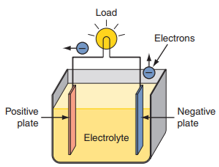
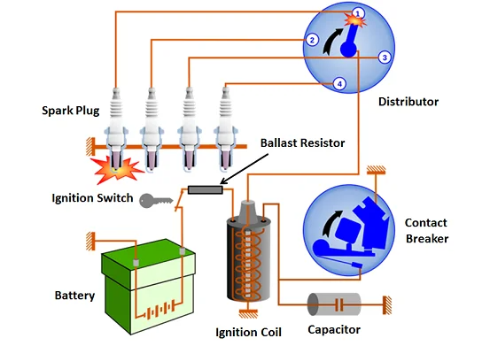
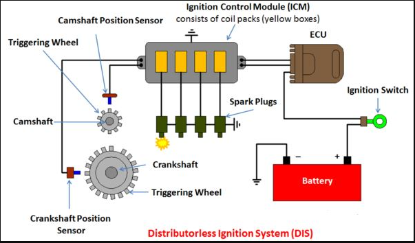

ELECTRICAL SYSTEM
The vehicle’s electrical system consists of several subsystems (smaller circuits): ignition system, starting system, charging system, and lighting system. Each sub-system is designed to perform a specific function, such as “fire” the spark plugs to ignite the engine’s fuel mixture, rotate the crankshaft to start the engine, illuminate the highway for safe night driving, etc.
Batteries
The primary source for electrical power in all automobiles is the battery. The battery has undergone many changes through the years. The introduction of hybrid vehicles and the promise of fuel cell vehicles have drastically changed the basic design of an automotive battery. Many different types of batteries are available or under development to exceed the needs of hybrid or fuel cell vehicles. Lead-acid batteries have been, and continue to be, the power source for conventional vehicles.

Figure 5.1. A simple electrochemical cell
Basic Construction
Batteries are devices that convert chemical energy into electrical energy. Chemical reactions that produce electrons are called electrochemical reactions. A battery stores DC voltage and releases it when it is connected to a circuit. Inside the battery are two electrodes or plates surrounded by an electrolyte.
These three elements make up an electrochemical cell (Figure 5.1). Batteries are normally made up of electrochemical cells connected together. One of the plates has an abundance of electrons (negative plate) and the other has a lack of electrons (positive plate). The electrons want to move to the positive plate and do so when a circuit connects the two plates. Batteries have two terminals, a positive that is connected to the positive plate and a negative that is connected to the negative plate.
Ignition systems
For complete combustion, the ignition system must supply properly timed, high-voltage surges across each pair of spark plug electrodes at the proper time under all engine operating conditions. This is quite a task: Consider a six-cylinder engine running at 4,000 rpm; the ignition system must supply 12,000 sparks per minute because it must fire three spark plugs per revolution. These plug firings must also occur at the correct time and generate the correct amount of heat. If the ignition system fails to do these things, fuel economy, engine performance, and emission levels will be adversely affected. There are basically two types of ignition systems: distributor ignition (DI) and electronic ignition (EI) or distributor-less ignition systems (DIS).

Figure 5.2. Distributor ignition system (DI)

Figure 5.3. Distributor-less ignition systems (DIS)
Purpose of the Ignition System
For each cylinder, the ignition system has three primary jobs:
■ It must generate an electrical spark with enough heat to ignite the air-fuel mixture in the combustion chamber.
■ It must maintain that spark long enough to allow total combustion of the fuel in the chamber.
■ It must deliver the spark to each cylinder to allow combustion to begin at the right time during the compression stroke. In order for an engine to produce its maximum amount of power, the maximum pressure created by combustion should be present when the piston is at 10 to 23 degrees after top dead center (ATDC). Because the combustion process requires a short period to complete, normally measured in thousandths of a second, combustion must begin before the piston is on its power stroke. Therefore, the delivery of the spark must be timed to arrive at some point before the piston reaches TDC. Determining how much before TDC is complicated. The speed of the piston moving from its compression stroke to the power stroke changes, whereas the time required for combustion stays the same. This means the spark should be delivered earlier as the engine’s speed increases. However, when the engine is doing much work, the load on the crankshaft tends to slow down the acceleration of the piston, and spark delivery should be somewhat delayed. When the spark should be delivered also depends on several other factors that can affect combustion times. Higher compression ratios tend to speed up combustion. Higher octane fuels ignite less easily and require more burning time. Increased vaporization and turbulence tend to decrease combustion times. Other factors, including intake air temperature, humidity, and barometric pressure, also affect combustion. Because of all of these, delivering the spark at the right time is a difficult task.